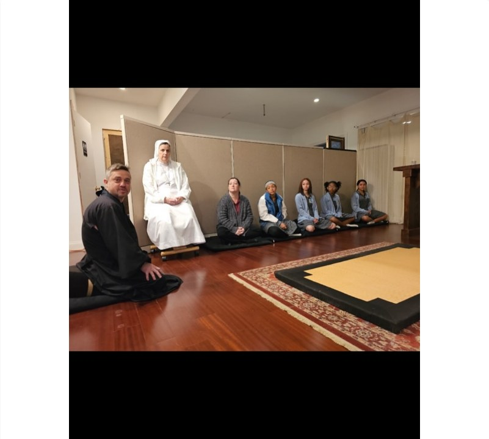
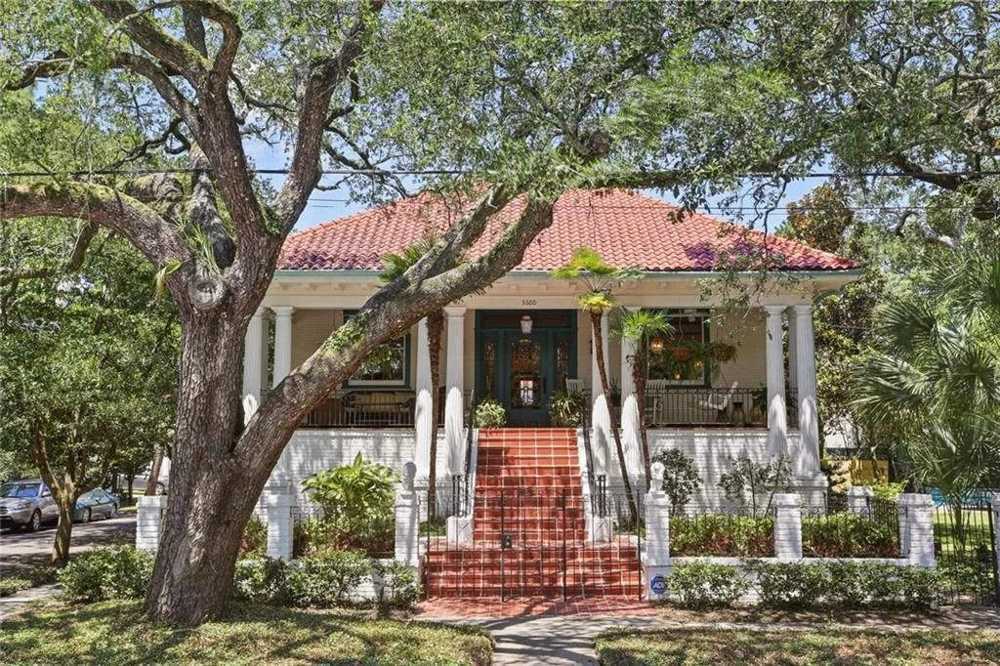
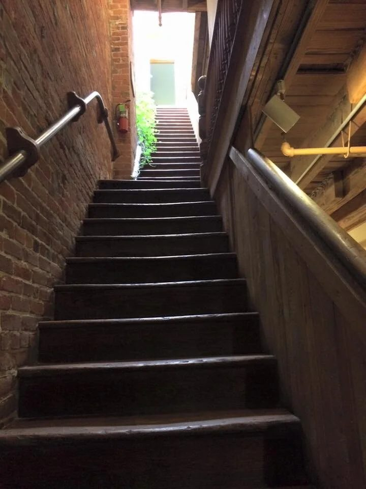
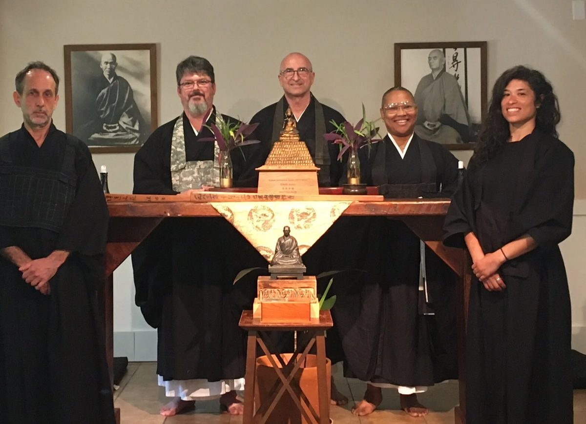
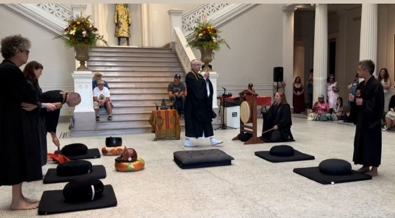
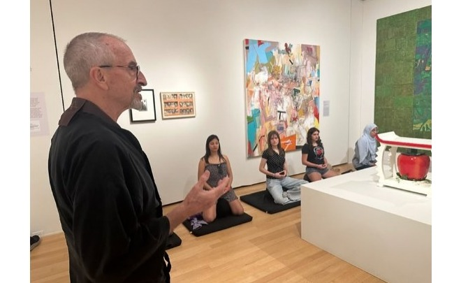

The New Orleans Zen Temple has provided instruction in true Zen practice for New Orleans and the Gulf South since 1983, in the tradition of Master Taisen Deshimaru.
We offer zazen sittings, retreats, and beginner orientation for newcomers. Some sittings are also available on Zoom. New to Zen? See our How to Start page.
Explore
How to Start
Begin your Zen practice
Schedule
Weekly sitting times
Zazen Practice
Meditation instruction
Retreats
Sesshin & events
From Camp Street to Oak Street




Sharing Zen Practice in New Orleans


Affiliate of the American Zen Association →